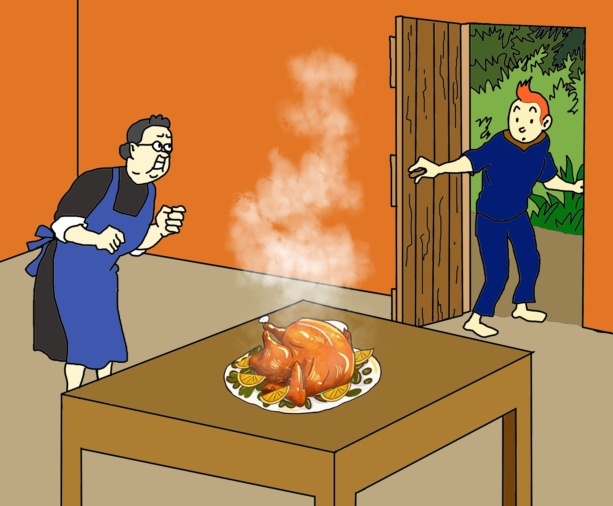

J- Miss Rose, do you want to go to the stream with me?
R- I don't want to hang out with a lazy person like you.
But because of his lazy personality, Rose is always cruel." onmouseover="upDate(this)" onmouseleave="undo()" onfocus="focusImage(this)" onblur="blurImage(this)"> 
I'm hungry, let's go find a house to beg for food.
Suddenly, he passed by a house and smelled it. Fragrant grilled meat, that is Mrs. Shelly's house. He went in and asked." onmouseover="upDate(this)" onmouseleave="undo()" onfocus="focusImage(this)" onblur="blurImage(this)">
S- Again!? just one more time!" onmouseover="upDate(this)" onmouseleave="undo()" onfocus="focusImage(this)" onblur="blurImage(this)">